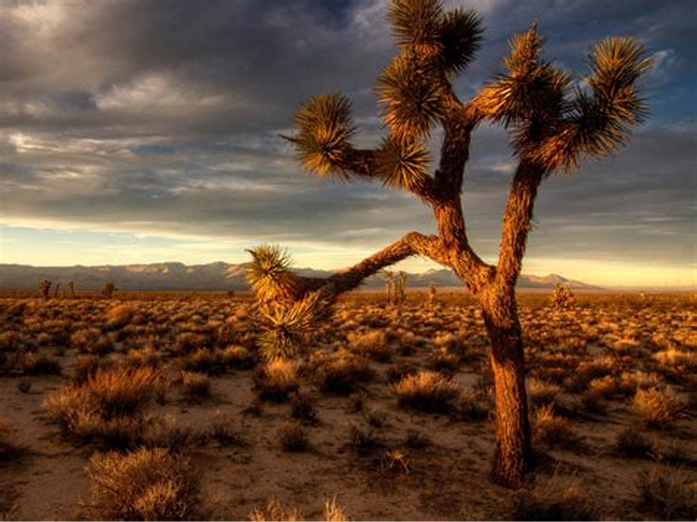
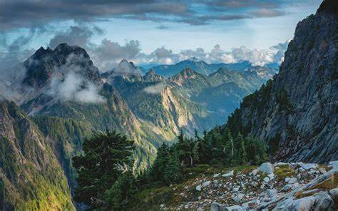
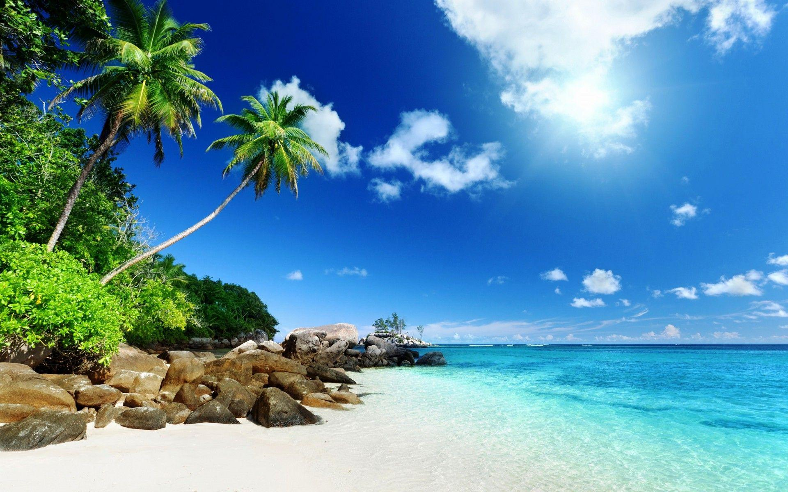

Desert nature:
It is characterized by its sandy or gravelly soil, hot climate in summer and cold climate in winter, dry and with little rain, and it is rich in animals that can withstand thirst, such as camels, and reptiles such as scorpions and snakes. As for its plants, they are very few and almost rare due to the lack of rain, and perhaps the cactus is the most famous desert plant; This is due to its ability to withstand water scarcity.
Coastal nature:
It is the nature adjacent to seas and oceans, and is characterized by its sandy soil near the shore, moderate temperature and high humidity. As for living organisms, its waters are rich in fish and marine life, and birds that feed on fish, such as seagulls, are abundant, and many plants grow in the soil adjacent to the sandy soil.

Mountainous nature:
The mountainous nature is characterized by its beautiful and charming atmosphere. Rain is abundant in the mountains, which causes the growth of many plants and trees. This environment is a suitable place for wild animals, as many species live there. Its climate is characterized by coldness in the winter and moderation in the summer.
Frozen polar nature:
It Is characterized by coldness and snow throughout the year, and plants cannot grow in such a nature, but some animals have adapted to live there, such as polar bears and penguins.

Tropical nature:
This nature is characterized by high temperatures and rain; therefore, tropical plants grow in the form of forests such as savannah, bananas, and pineapples, and many types of animals live in it such as lions, giraffes, tigers, and elephants.
